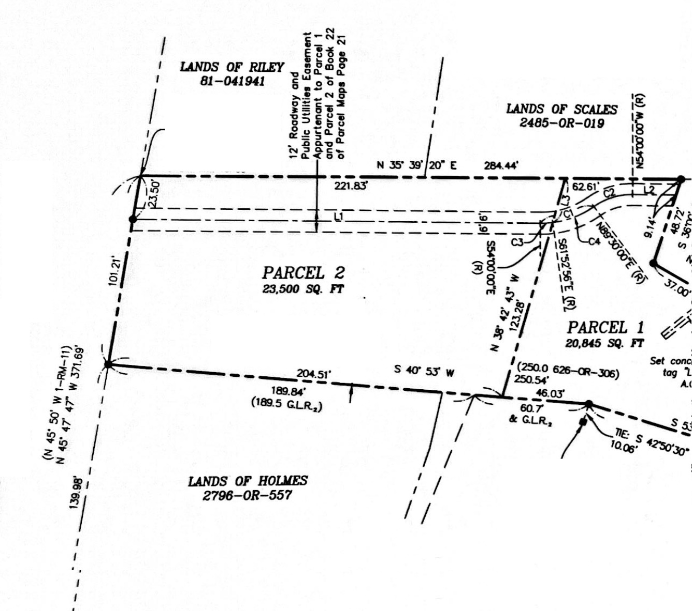

Top-rated schools
Ross School is the town's own TK–8 public school, run by a one-school district. It's known for small classes and is consistently ranked among the best in California.
For sale by owner · Ross, Marin County
A flat, 23,500 sq ft building lot, just over half an acre, on a private, gated road in one of the Bay Area's most sought-after small towns. Build your dream home in Ross.
The lot
3 Ridgeview Drive is a 23,500 square foot lot, just over half an acre, zoned for a single-family home. It's flat and easy to reach, sitting on a private, gated road that gives you quiet and privacy from day one.
The estimated floor area (FAR) is about 4,000* square feet. Buyers need to confirm this with the Town of Ross. You can plan the house, garden and outdoor living you want, instead of reworking someone else's.
Buildable land in Ross is scarce. The town has only about 700 households, and open lots almost never come up. Secure your place now and build when you're ready.
Site plan
*Estimated. Buyers need to check the allowable floor area, setbacks and building requirements with the Town of Ross.

Why Ross
Ross School is the town's own TK–8 public school, run by a one-school district. It's known for small classes and is consistently ranked among the best in California.
From Ridgeview Drive you can walk to Ross School, the post office and the center of town. Everyday errands don't need a car.
Ross has about 2,300 residents and around 700 households. It's quiet, leafy and exclusive. People choose it for the privacy.
The 11-acre Marin Art & Garden Center and its Barn Theater are right in town. Phoenix Lake and the trails of Mount Tamalpais are just beyond.
Ross is in central Marin, just north of the Golden Gate Bridge. The Larkspur ferry and Highway 101 are minutes away.
Ross was incorporated in 1908 and named after James Ross, who bought the land in 1857. It has kept its small-town character ever since.
The opportunity
A new wave of tech and AI growth is bringing money and people back to San Francisco. The best Marin towns are feeling it first, and Ross is at the top of many buyers' lists.
With so few households and almost no vacant land, owning a buildable lot here puts you ahead of that demand. You can design and build on your own schedule.
Buyers should confirm zoning, building size, utilities and permit requirements with the Town of Ross before purchase.
Offered directly by the owner
For pricing, details or to arrange a visit, email the owner directly.
3ridgeviewdrive@gmail.com3 Ridgeview Drive, Ross, CA 94957 · View on map